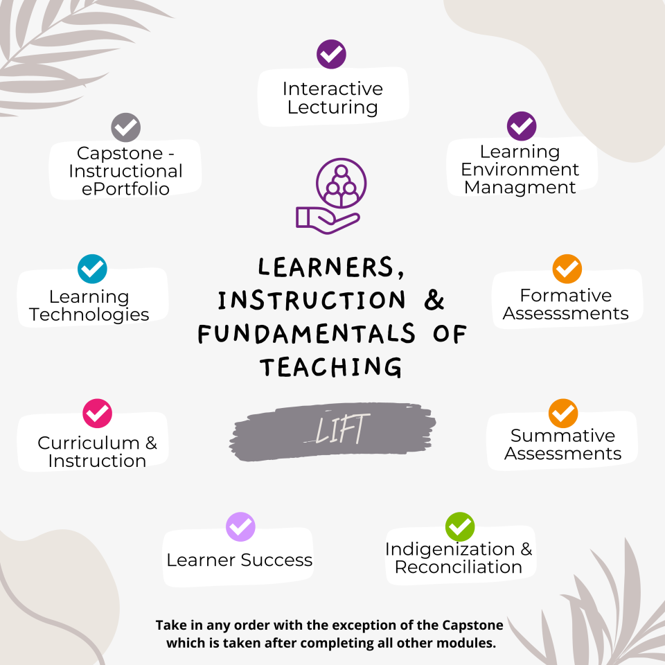
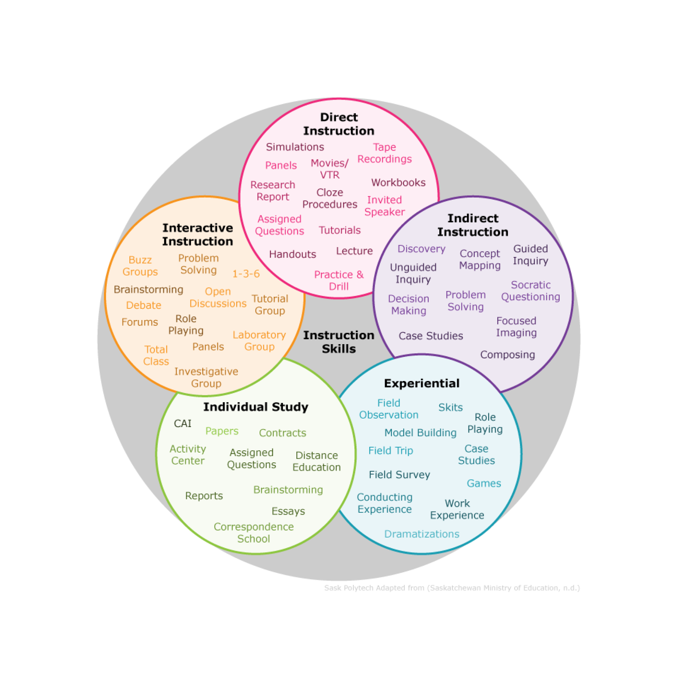

LIFT-1006 Final Assignment by Arlin Schaffel
Learners, Instruction, & Fundamentals of Teaching (LIFT)

LIFT consists of nine 4-week learning modules. The modules focus on applied instructional skills development
catering specifically to faculty and in support of the Instructor Competencies. LIFT modules are flexible
and can be taken in any order except LIFT 1008, which must be completed last.
LIFT 1006 - Curriculum & Instruction

You will examine strategies for effective instruction through the lens of curriculum design. You will
focus on the alignment of learning outcomes, lesson planning, and instructional delivery strategies
with the goal of incorporating reflection into your own professional practice.
Instructional Strategies

Instructional strategies are the techniques instructors use to deliver training. Instructional strategies
should provide effective and productive learning by:
- Adapting to the learning styles and other needs of each learner.
- Actively engaging learners in the learning process.
- Helping learners become independent learners.
- Supporting learners in reaching their learning outcomes.
- Preparing learners to transition to their goals.
PHOT 126 - Photography
Your studies will focus on photography fundamentals. You will focus on camera operation
for natural light photography and off-camera lighting techniques. Camera operation will be
examined through aperture, shutter speed, ISO, white balance, and focusing techniques.
You will learn about various lighting and composition techniques for capturing
professional images.
Assignment
PHOT 126 | Practice Exposure
- Class: PHOT 126
- Learning Outcome: Practice Exposure
-
Content Skill:
Take properly exposed photographs using Aperture, Shutter Speed, and ISO.
Instructional Strategies
-
Experiential: Field Trip
A field trip provides learners with a hands-on experience that directly links
theoretical knowledge to real-world application. In Saskatoon some great locations could be
the Forestry Farm, Remai Art Gallery, or even Campus! These locations provide environments
with different lighting conditions, such as indoor artificial light,
natural sunlight, shade, and varying weather patterns, which are crucial for mastering exposure.
This strategy allows learners to immediately see the results of their adjustments on their
cameras, fostering a deeper understanding through trial and error. Moreover, being in a dynamic
and diverse setting encourages creativity and critical thinking, as students must adapt to
changing conditions and solve problems on the spot.
-
Interactive Instruction: Problem Solving
This strategy involves presenting students with
various challenging photographic situations, such as shooting in low light, dealing with high
contrast, or capturing fast-moving subjects. Students must then determine and adjust the
appropriate exposure settings to achieve the desired results. By solving these practical
problems, students gain
a deeper understanding of exposure principles and how to manipulate their cameras to achieve
optimal results. This method ensures that learners are not just passively receiving information
but are actively engaging with the material, leading to a more profound and lasting mastery of
exposure techniques.
PHOT 126 | Examine Lighting Techniques
- Class: PHOT 126
- Learning Outcome: Examine Lighting Techniques
-
Content Skill:
Understand different types of artificial lights, how to set them up
in a studio setting, and the lighting effects they create.
Instructional Strategies
-
Direct Instruction: Video Recordings
Video recordings provide a visually rich medium for demonstrating various lighting
techniques, allowing learners to see exactly how different setups are achieved and the resulting
effects. This strategy enables students to pause, rewind, and rewatch the demonstrations as
needed, facilitating thorough examination and understanding of each technique. By observing
professional examples and explanations in the recordings, students can break down complex
concepts into manageable parts and gain a clear insight into the nuances of lighting.
This method ensures that learners have access to high-quality,
consistent instruction that they can revisit at their own pace, reinforcing their learning and
aiding retention.
-
Interactive Instruction: Laboratory Group
In Saskatoon we have a studio which can be rented and utilized as a lab for students.
This strategy promotes active learning as students engage in hands-on activities, set up
lighting equipment, and observe the
immediate effects of their adjustments. By working in groups, learners benefit from peer
interaction, sharing insights, and troubleshooting problems together, which enhances their
understanding of lighting concepts. Additionally, the collaborative nature of this strategy
encourages critical thinking and creativity, as students must discuss and justify their choices.
Reflection
In my lesson planning, I'm going to make a conscious effort to use the right Bloom's verbs to clearly define
what I want students to achieve. I'll also mix in a variety of instructional strategies that I learned in
the course. This way, I can cater to different learning styles and keep the classes more engaging and
effective.
One of the key takeaways from this module that I would share with colleagues is the understanding that there
are numerous effective ways to achieve our teaching goals, and it is crucial to remain open to exploring
diverse instructional strategies. By experimenting with different strategies, we can create a more dynamic
and inclusive educational environment.